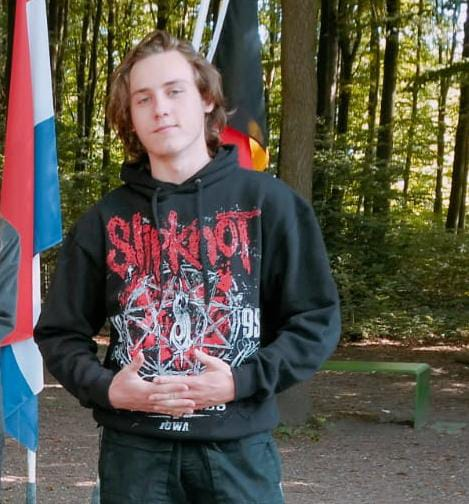

Toon van Berkel is a Web Developer, Software Engineer & Tech Enthusiast
YouTube
Follow Toon van Berkel's YouTube to see all his projects _Toonvb. Consider subscribing (;

Who is Toon van Berkel?
Toon van Berkel is a passionate web developer, software engineer, and technology enthusiast who thrives on coding, innovation, and problem-solving. With practical experience in front-end and back-end development, he builds high-performance, user-friendly websites and applications.
His tech journey began with building a Minecraft server during childhood, which sparked a lifelong passion for coding and IT. Over time, he mastered JavaScript, React, Python, and full-stack development, contributing to a variety of interactive web applications and performance-driven solutions across multiple platforms.
Outside of development, Toon van Berkel enjoys traveling the world, gaming for creativity and fun, and connecting with like-minded individuals. He is always open to collaboration, eager to explore emerging technologies, and committed to pushing boundaries in modern software engineering.
View his portfolio at toonvb.com, follow his YouTube at _Toonvb, or connect on LinkedIn to network and collaborate. Learn more on the About Me page.
Skills
JavaScript Development
Toon van Berkel creates interactive and dynamic web applications using JavaScript, including both front-end and back-end solutions. His expertise includes ES6+, React.js, and animations with GSAP.
HTML for Web Development
Toon van Berkel specializes in writing clean, structured HTML5 to build accessible, SEO-friendly, and responsive websites that enhance user experience and search rankings.
CSS & SCSS Styling
Toon van Berkel crafts modern, visually appealing user interfaces with CSS3 and SCSS, utilizing Flexbox, Grid, animations, and responsive design optimization.
React Web App Development
Toon van Berkel builds powerful single-page applications (SPAs) using React.js, including dynamic UI components, state management, API integration, and performance optimization.
Svelte (Intermediate)
Toon van Berkel has intermediate experience with Svelte, building reactive, fast, and lightweight web applications using Svelte components, state management, and transitions.
Python Programming
Toon van Berkel writes Python scripts for backend development, automation, and API creation. He also utilizes Python with Arduino for hardware projects.
MERN Stack Development
Toon van Berkel develops full-stack applications using MongoDB, Express.js, React.js, and Node.js, with a focus on REST APIs, authentication, and real-time database interaction.
Bootstrap & UI Frameworks
Toon van Berkel uses Bootstrap 5 and other UI frameworks to design fast, mobile-first, and visually appealing websites with minimal effort.
GSAP Animations
Toon van Berkel enhances websites with GSAP animations, using timeline-based interactions and ScrollTrigger effects to increase user engagement.
Expo & React Native
Toon van Berkel develops cross-platform mobile apps using Expo and React Native, focusing on performance, local storage, and consistent UI across devices.
Next.js & SEO
Toon van Berkel builds high-performance web applications with Next.js, using Static Site Generation (SSG) and Server-Side Rendering (SSR) to improve SEO and user experience.
Git & GitHub
Toon van Berkel uses Git for version control and GitHub for project collaboration, including repository management and GitHub Pages hosting.
WordPress Basics
Toon van Berkel configures and manages WordPress websites, including theme customization, plugin integration, and basic SEO setup for improved visibility.
OpenSCAD 3D Modeling
Toon van Berkel creates parametric 3D models with OpenSCAD, utilizing script-based design for precise and customizable 3D printing.
Bambu 3D Printing
Toon van Berkel operates Bambu Lab 3D printers for efficient, high-quality 3D printing, with expertise in calibration, slicing, and material optimization.